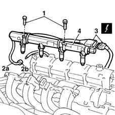

1056B61 single fuel manifold with injectors - r+r with air conveyor/box removed
- Path
- Procedures > 10 ENGINE UNIT > 1056 PETROL INJECTION SYSTEM > 1056B multi-point injection system (mpi) > 1056B61 single fuel manifold with injectors - r+r with air conveyor/box removed
- Kind
- repair procedure (removal / refitting; the operation number is the code)
- Applies to
- engines: 1.6 16v; all production periods
- Interactive page
- https://sloeber94.github.io/elrnDB-fMltpl/en/#/2891266
Applies to: engines: 1.6 16v; all production periods
 Removing
Removing
 Refitting
Refitting1. Undo the bolts securing the fuel manifold to the intake manifold.
2. Disconnect fuel delivery line (2a) from quick-release fitting (2b).
3. Disconnect the electrical supply connection to the injectors.
4. Take the injectors out of the intake manifold and remove the fuel manifold.
 | Name | Connector |
|---|---|---|
3 | Injector |

Applies to: engines: 1.6 16v; all production periods
Refitting
RemovingFit the fuel manifold in its seat.
Fit the injectors into their seats on the intake manifold.
Connect the electrical connections to the injector coupling.
Tighten the bolts securing the fuel manifold to the intake manifold.